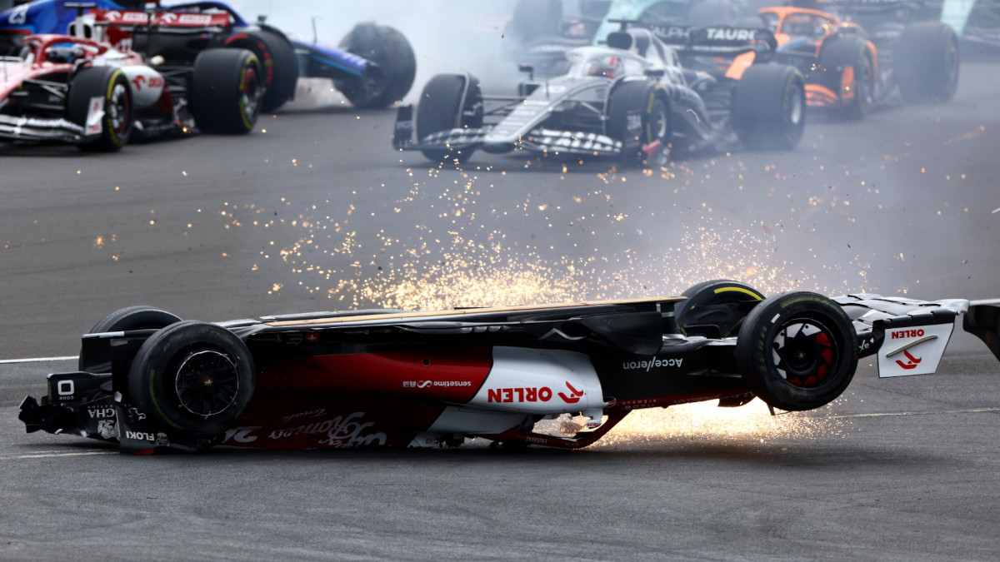
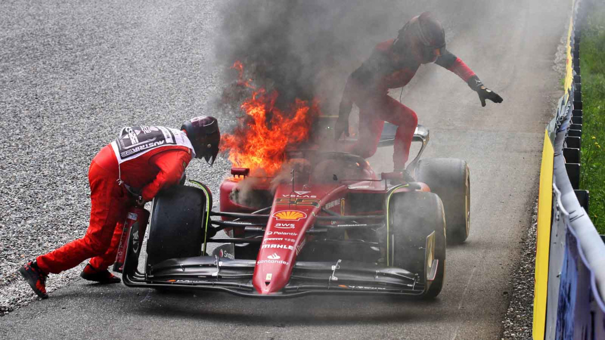

Leclerc once again claimed pole position for the Azerbaijan Grand Prix, in front of Pérez and Verstappen. Pérez immediately overtook Leclerc in turn 1 and held the lead until lap 15, where Verstappen overtook him. On lap 9, the virtual safety car was deployed after Sainz stopped at turn 4, due to a hydraulic issue. Then, on lap 20, after briefly taking the lead of the race, Leclerc suffered a power unit issue and pulled into the pits. Magnussen and Zhou also retired from the race. Tsunoda was shown the black-and-orange flag for a DRS failure, which was fixed with speed tape, and he dropped to 13th. Williams's Latifi received a ten-second stop and go penalty after for a grid infringement and was later given a five-second time penalty for ignoring blue flags.
Verstappen took pole position for the Canadian Grand Prix, which returned to the calendar after a two-year absence, after a wet qualifying session. Alpine's Alonso started second, ahead of Sainz, while Leclerc started from the back of the grid after exceeding his quota of power unit components. Pérez started 13th following a crash in qualifying. Pérez retired on lap 8 with gearbox issues, while technical problems for Schumacher forced him to retire on lap 20. Tsunoda crashed on lap 49, bringing out the safety car and allowing Sainz to close in on Verstappen and chase down the Red Bull driver in the closing stages. Despite this, Verstappen won the race from Sainz and Hamilton, while Leclerc climbed up to 5th. Alonso was given a five-second post-race penalty for making more than one change of direction to defend a position, dropping him down from 7th to 9th.
Sainz claimed his first pole position at the British Grand Prix. Verstappen overtook him at turn one, before the race was red flagged and was restarted with original positions, meaning Sainz started first again. He kept first position off the second start, before being overtaken by Verstappen several laps in. Verstappen picked up damage to his floor and dropped down to seventh. Sainz was then overtaken by Leclerc. Sainz, Pérez and Hamilton all pitted for new tyres under the safety car. With newer tyres, Leclerc was then overtaken by all three, dropping him down to fourth. Sainz won his first-ever Formula One race.
Verstappen qualified on pole and won the second sprint of the championship at the Austrian Grand Prix. He was overtaken three times at various points by Leclerc, who eventually won the race. Sainz was quicker than Verstappen and was on for an "easy one-two," before a power unit issue saw him retire, leaving Verstappen second and promoting Hamilton to third.
Russell took his maiden pole position at the Hungarian Grand Prix while Red Bull Racing struggled in qualifying, with Verstappen suffering MGU-K problems and Pérez unable to get a clean lap in Q2 leaving them tenth and eleventh on the grid. Verstappen made a strong recovery drive, working his way up the order with better strategy and pace. Verstappen won from Hamilton, who recovered from seventh, following a DRS failure in qualifying. Russell came third after being passed by Hamilton with five laps to go. Sainz and Leclerc finished fourth and sixth respectively after questionable strategy calls from the Ferrari pit wall.
The Belgian Grand Prix was the first race held after the August break, with several drivers taking on additional components and incurring grid penalties for doing so. Sainz started the race from pole; Alonso and Hamilton made contact after a scrap at Les Combes. Hamilton was forced to retire his car shortly afterwards, and an incursion between Latifi and Bottas on the second lap drew out the safety car. Verstappen made quick work of the cars ahead at the restart, with Pérez following to secure a one-two finish for Red Bull Racing. Sainz rounded out the podium. Leclerc pitted for new soft tyres on the penultimate lap to attempt the fastest lap and incurred a time penalty for speeding in the pit lane, demoting him to sixth after the race.
At the Dutch Grand Prix, Verstappen was able to beat Leclerc to pole at his home race. On lap 45, Tsunoda pulled over with an issue on the front-left tyre. Tsunoda was told to continue and came in a lap later, for a change of tyres and to tighten his seatbelt, which he had loosened as he prepared to abandon his car. On lap 47, Tsunoda retired with a differential issue. This brought out a virtual safety car, allowing Verstappen to make a pit stop to keep the lead ahead of the two Mercedes. On lap 55, Bottas retired with an engine issue, bringing out a full safety car. Verstappen overtook Hamilton at the restart almost immediately, while Sainz received a five-second penalty for an unsafe release during his pit stop. After Russell made a split-second decision to pit again for faster softs, he overtook Hamilton, who fell to fourth after being overtaken by Leclerc as well. Following the race, a conspiracy theory emerged accusing Red Bull Racing strategist Hannah Schmitz of conspiring with sister team AlphaTauri to ensure a favourable result for Verstappen, after questioning the nature of Tsunoda's retirement. The incident was looked into by race stewards, whose only action was to reprimand Tsunoda for having his belts undone.
Leclerc took pole at the Italian Grand Prix with Verstappen taking second. He, alongside Sainz and Hamilton, took penalties for replacing components. Verstappen started from seventh, but reached second by lap 5, behind Leclerc who had held successfully defended first position. After Vettel experienced an engine failure on lap 10, Leclerc pitted under the virtual safety car. Verstappen would then lead the race until he pitted on lap 26. Alonso's Alpine would then be retired because of a water pressure issue on lap 31, but was returned to the pit lane to avoid any disruptions to the race. Leclerc made a second pit stop on lap 34, again giving Verstappen the lead. Stroll retired on lap 39 and on lap 47, Ricciardo stopped his car on the side of the track and a safety car was deployed. Verstappen held the position and won under the safety car.
Source: Wikipedia